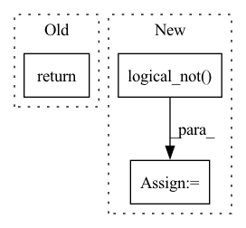

Pattern ID :32837

Before Change
self.neg_weight = neg_weight
def forward(self, label, pos_score, log_pos_prob, neg_score, log_neg_prob):
return (1 - pos_score) + \
self.neg_weight * torch.sum(torch.relu(neg_score - self.margin), dim=1)
After Change
pos_score = torch.sigmoid(pos_score)
neg_score = torch.sigmoid(neg_score)
neg_score_mean = torch.mean(torch.relu(neg_score - self.margin), dim=-1) // [B] or [B,N]
notpadnum = torch.logical_not(torch.isinf(pos_score)).float().sum()
loss = (1 - pos_score) + self.neg_weight * neg_score_mean
loss = torch.nan_to_num(loss, posinf=0.0)
return loss.sum() / notpadnum
In pattern: SUPERPATTERN
Frequency: 3
Non-data size: 3
Instances
Fragment ID: 95239599
Project Name: ustcml/recstudio
Commit Name: d105308841df24997fabad0bcbe394d8ae46a729
Time: 2022-08-15
Author: angus_huang@mail.ustc.edu.cn
File Name: recstudio/model/loss_func.py
M Class Name: CCLLoss
N Class Name: CCLLoss
M Method Name: forward(6)
N Method Name: forward(6)
M Parent Class: PairwiseLoss
N Parent Class: PairwiseLoss
M File Name: recstudio/model/loss_func.py
N File Name: recstudio/model/loss_func.py
M Start Line: 152
M End Line: 153
N Start Line: 172
N End Line: 178
'>
Before Change
prev_rejected = not accepted
rk_state = (fnew, tnew, ynew, h)
return rk_state, t1_achieved
class RK23(RKAdaptiveStepSolver):
error_estimator_order = 2
After Change
factor = torch.minimum(torch.full_like(new_factor, self.max_factor), new_factor)
if prev_rejected:
factor = torch.minimum(torch.ones_like(factor), factor)
not_t1_achieved = torch.logical_not(t1_achieved)
h[not_t1_achieved] *= factor[not_t1_achieved]
else:
'>
Fragment ID: 95239605
Project Name: xitorch/xitorch
Commit Name: c6f0785664d60d1310778d43f14a3464660ea4d9
Time: 2021-12-30
Author: firman.kasim@gmail.com
File Name: xitorch/_impls/integrate/ivp/adaptive_rk.py
M Class Name: RKAdaptiveStepSolver
N Class Name: RKAdaptiveStepSolver
M Method Name: _single_step(3)
N Method Name: _single_step(3)
M Parent Class: object
N Parent Class: object
M File Name: xitorch/_impls/integrate/ivp/adaptive_rk.py
N File Name: xitorch/_impls/integrate/ivp/adaptive_rk.py
M Start Line: 85
M End Line: 122
N Start Line: 125
N End Line: 165
'>
Before Change
similarity_matrix = similarity_matrix.view(-1)
label_matrix = label_matrix.view(-1)
return similarity_matrix[label_matrix.eq(1)], similarity_matrix[label_matrix.eq(0)]
class CircleLossBackward(nn.Module):
After Change
label_matrix = label.unsqueeze(1) == label.unsqueeze(0)
positive_matrix = label_matrix.triu(diagonal=1)
negative_matrix = label_matrix.logical_not().triu(diagonal=1)
similarity_matrix = similarity_matrix.view(-1)
positive_matrix = positive_matrix.view(-1)
negative_matrix = negative_matrix.view(-1)
return similarity_matrix[positive_matrix], similarity_matrix[negative_matrix]
'>
Fragment ID: 95239603
Project Name: tinyzeamays/circleloss
Commit Name: d25dcfcf42c4231b5303a2f67f63dc65e2662ec8
Time: 2020-04-03
Author: 1049793129@qq.com
File Name: circle_loss.py
M Class Name: AnonimousClass
N Class Name: AnonimousClass
M Method Name: convert_label_to_similarity(2)
N Method Name: convert_label_to_similarity(2)
M Parent Class:
N Parent Class:
M File Name: circle_loss.py
N File Name: circle_loss.py
M Start Line: 40
M End Line: 47
N Start Line: 40
N End Line: 48